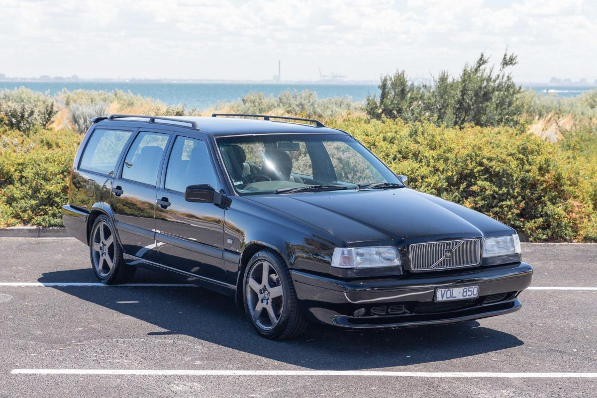
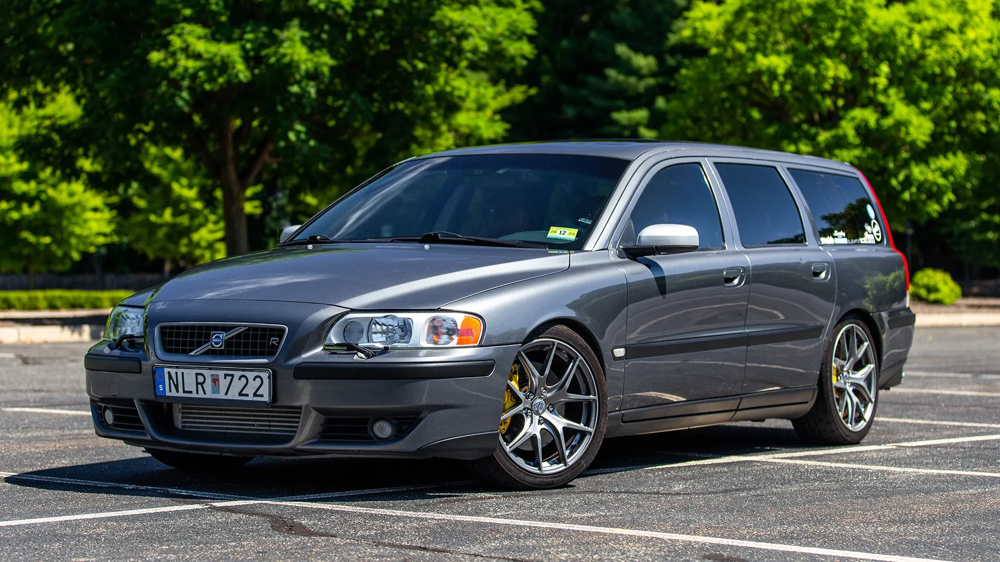

Az opel mellett ez a svéd autómárka áll személyes rangsorom elején. A 850-es ikonikus széria fogott meg a cég kapcsán. A biztonsági funkciók illetve az autók teljesítménye amennyire egy "unalams" márka annyira strapabíró és időtálló.
Sokaknak csak halottaskocsi, viszont ez a turbótégla 250 lóerővel, 2319 köbcentivel, 350 newtonmeterrel ÉS beépített hátsó gyereküléssel rendelkezik, számomra az egyik legérdekesebb párhuzam. Ezeket az autókat szánákosan is alig lehet tönkretenni, törni végképp nehéz.

Amikor eljön az ideje az autóvásárlásnak, nem más áll a ranglista elején mint a V70 és a V70R. A V70R nevében az R a teljesítmény alapú kiviteleket jelenti, ezért ez a doboz is 350 lóerőt kapott (a hátsó ülésmagasító itt sem maradt el).
